Overview
In this project, I explored diffusion models in two stages: (A) using a pretrained DeepFloyd IF model to implement diffusion procedures like forward noising, iterative denoising, sampling, CFG, image editing, and inpainting and (B) training my own UNet‑based flow matching model on MNIST, adding time conditioning and class conditioning.
Part A — The Power of Diffusion Models!
0. Setup & Prompting
DeepFloyd IF is a text‑to‑image diffusion model. The prompts are first converted into embeddings, then the model samples from noise to generate images.
I experimented with custom prompts and different num_inference_steps to see the quality/speed tradeoff.
1.1 Implementing the Forward Process
The forward diffusion process adds noise to a clean image \(x_0\) to produce \(x_t\): \[ x_t = \sqrt{\bar\alpha_t}x_0 + \sqrt{1-\bar\alpha_t}\,\epsilon, \quad \epsilon\sim\mathcal{N}(0, I). \] Below are the Campanile at noise levels \(t \in \{250, 500, 750\}\).
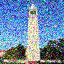
t=250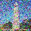
t=500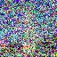
t=7501.2 Classical Denoising (Gaussian Blur Baseline)
As a baseline, I tried to denoise using classical Gaussian blur filtering. As expected, heavy noise destroys structure that a simple blur cannot recover.
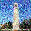
t=250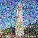
t=500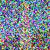
t=750t=250t=500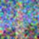
t=7501.3 One‑Step Denoising (Pretrained UNet)
The pretrained UNet predicts the noise \(\epsilon\) in \(x_t\). A single‑step estimate of the clean image can be computed as: \[ \hat x_0 = \frac{x_t - \sqrt{1-\bar\alpha_t}\,\hat\epsilon}{\sqrt{\bar\alpha_t}}. \] I visualize the original, noisy, and one‑step denoised results for \(t \in \{250, 500, 750\}\).
t = 250

t=250t = 500
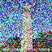
t=500t = 750

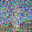
t=7501.4 Iterative Denoising
One‑step denoising is coarse at high noise. Iterative denoising gradually refines predictions along a (strided) timestep schedule, producing much better reconstructions.
1.5 Diffusion Model Sampling (Starting from Pure Noise)
With the denoising loop implemented, I generated samples starting from random Gaussian noise using the prompt
"a high quality photo".
1.6 Classifier‑Free Guidance (CFG)
CFG improves sample quality by combining conditional and unconditional predictions: \[ \epsilon = \epsilon_{\text{uncond}} + \gamma(\epsilon_{\text{cond}} - \epsilon_{\text{uncond}}). \] Below are 5 samples generated with CFG (higher fidelity / stronger prompt adherence).
1.7 Image‑to‑Image Translation (SDEdit) + Inpainting
Image‑to‑image editing works by adding controlled noise to a source image and denoising it back, allowing the model to “hallucinate”
plausible content. Below are edits of the Campanile with different starting noise levels (i_start).
Campanile edits across noise levels
i_start=1i_start=3i_start=5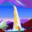
i_start=7i_start=10i_start=20Text‑conditional image‑to‑image (example)
1.8 Visual Anagrams
Visual anagrams are optical‑illusion style generations where one image can be interpreted as two different prompts (e.g., upright vs. flipped).
1.9 Hybrid Images
Hybrid diffusion images combine low‑frequency structure from one prompt with high‑frequency details from another, producing different perceptions at different viewing scales.
Part B — Flow Matching from Scratch!
In Part B, I trained a UNet to learn denoising/flow matching on MNIST. I started with an unconditional one‑step denoiser, then added time conditioning, and finally added class conditioning (with classifier‑free guidance).
1.2 Noising Process
Training data is generated by adding noise \(z = x + \sigma\epsilon\), where \(\epsilon\sim\mathcal{N}(0,I)\). Below is a visualization of the noising process across different \(\sigma\) values.
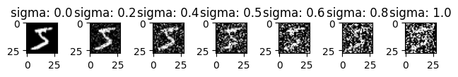
1.2.1 Training a Single‑Step Denoiser
I trained an unconditional UNet denoiser on MNIST with \(\sigma=0.5\) and an L2 loss, and visualized both the training loss curve and qualitative results.
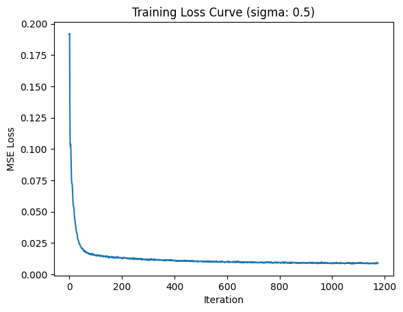
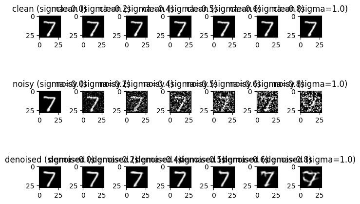
1.2.2 Out‑of‑Distribution Testing
After training on \(\sigma=0.5\), I evaluated the denoiser on the same digit with different noise levels \(\sigma\in\{0.0,0.2,0.4,0.5,0.6,0.8,1.0\}\).
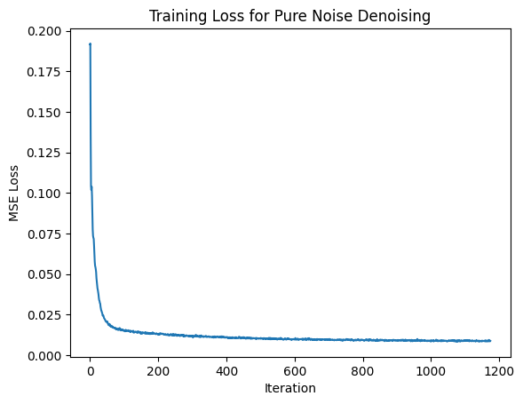
1.2.3 Denoising Pure Noise
To make denoising generative, I trained the network to denoise pure Gaussian noise (starting from \(z=\epsilon\)). Below are the loss curve and sample results (plus a short note about patterns in the outputs).
2.2 Training a Time‑Conditioned UNet
Next, I trained a time‑conditioned UNet with an embedding of \(t\) (normalized to \([0,1]\)) and used an Adam optimizer with exponential LR decay.
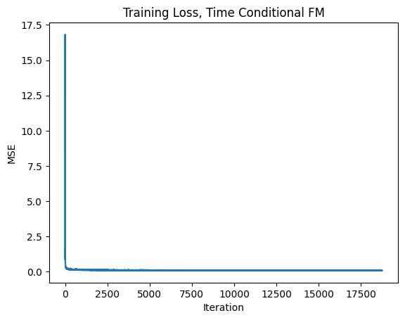
2.3 Sampling from the Time‑Conditioned UNet
Using Algorithm B.2, I sampled digits by iterative denoising from noise. Below are samples after training for 1, 5, and 10 epochs.
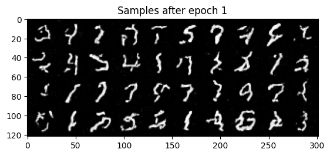
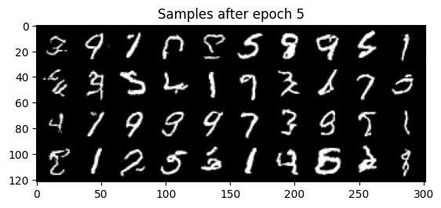
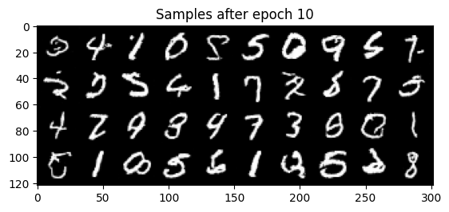
23output.png below; otherwise remove it.
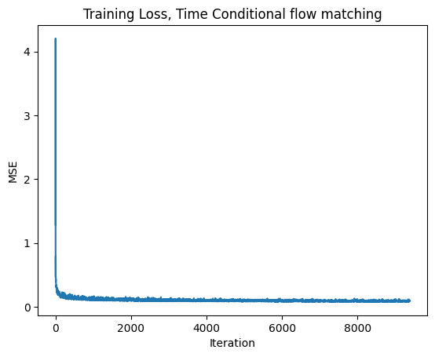
2.5 Training a Class‑Conditioned UNet
I added class conditioning using a one‑hot digit vector \(c\) with dropout (classifier‑free guidance style), then trained the model similarly.
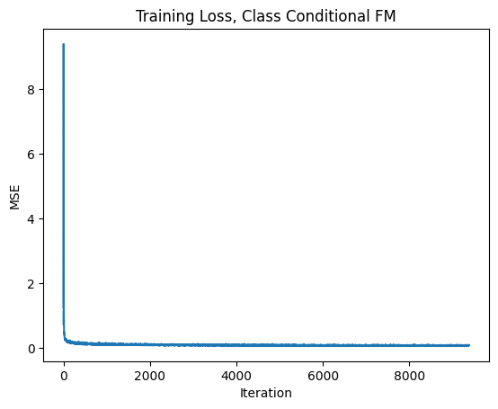
2.6 Sampling from the Class‑Conditioned UNet (with CFG)
Finally, I sampled from the class‑conditioned model using classifier‑free guidance (\(\gamma=5.0\)). Below are results after 1, 5, and 10 epochs.
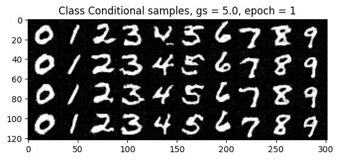
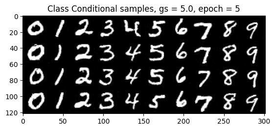
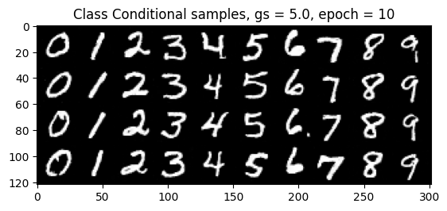
Removing the Learning Rate Scheduler
The spec asks to remove the exponential LR scheduler while maintaining similar performance. If you ran this experiment, add your “no‑scheduler” visualization and a short description of what you changed (e.g., learning rate, epochs, optimizer settings).
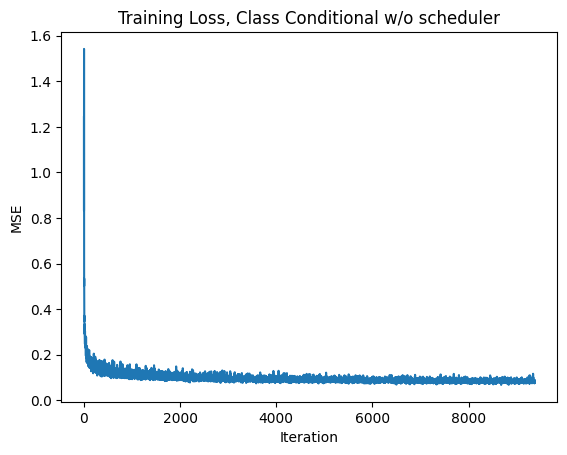